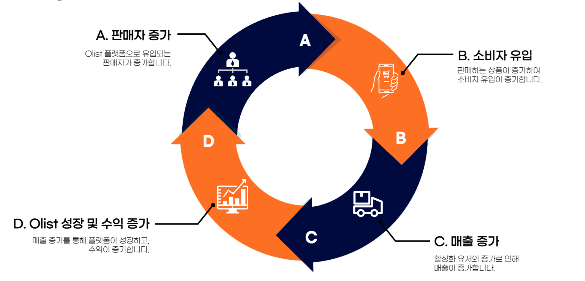
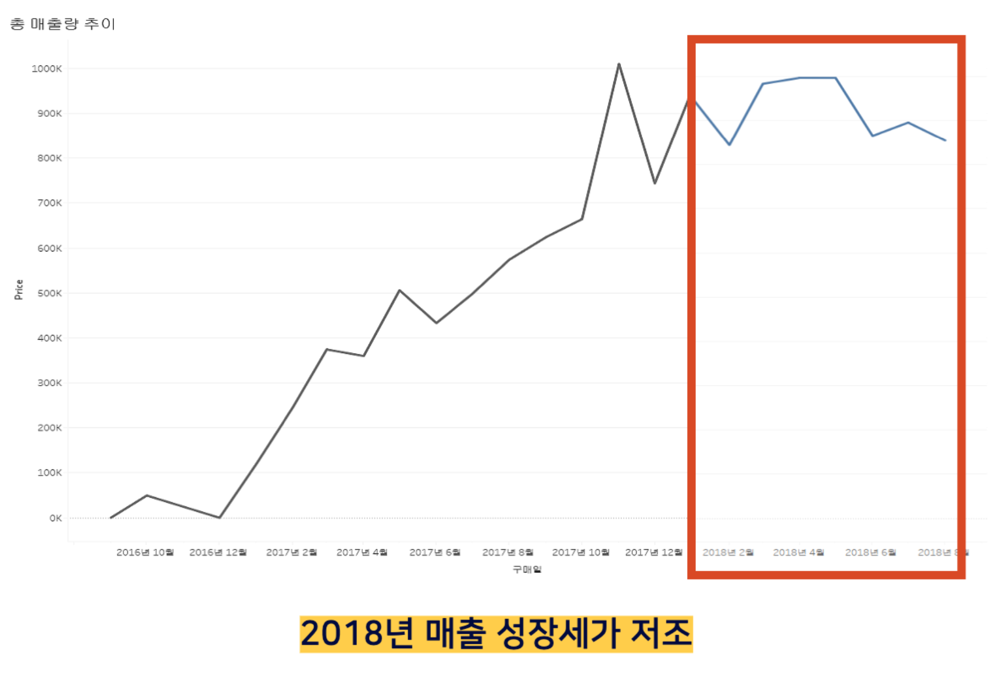
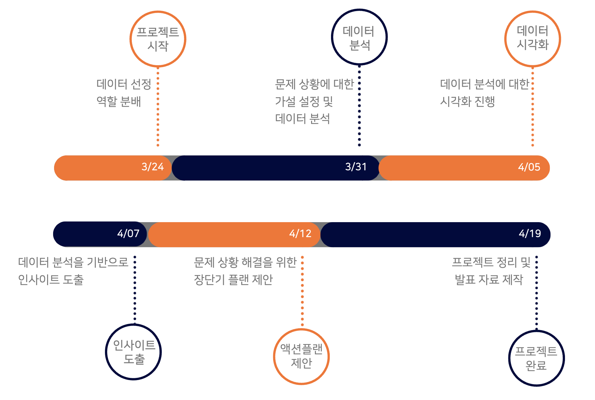
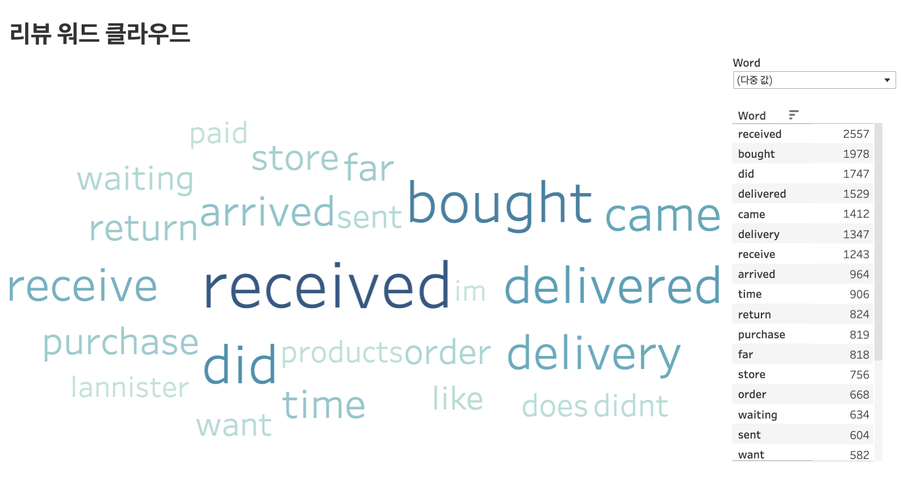
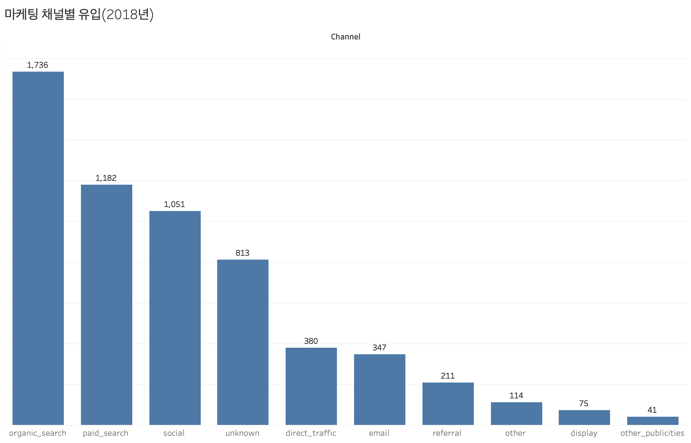
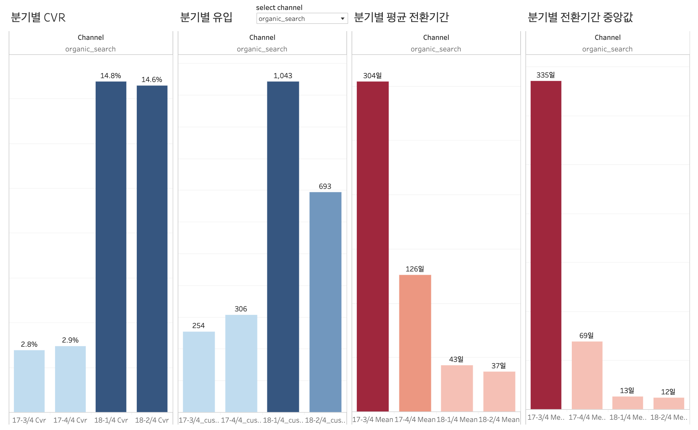
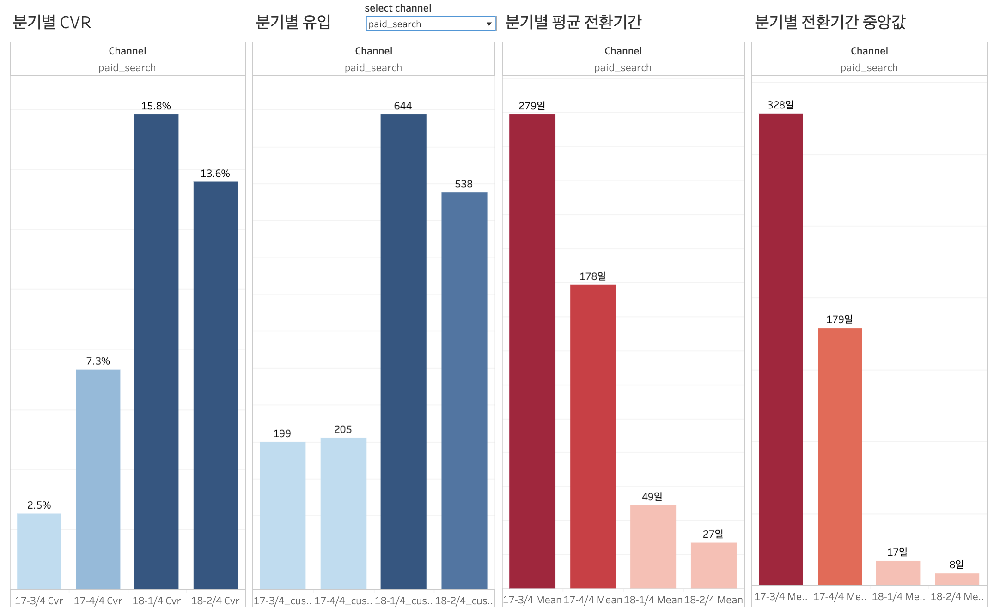

이커머스 매출 증대를 위한 데이터 분석
INTRO
DATA / 문제정의 / 프로젝트 목표 / 가설 / 프로젝트 진행과정
데이터 분석
EDA / 데이터 분석 / 데이터 분석 결과
결론
결론 / 프로젝트 회고 / 참고 자료
프로젝트 분석 코드
INTRO
1. DATA
💡 데이터
- Kaggle에 존재하는 Olist Marketing Funnel 데이터와 Brazilian E-commerce(olist) Public 데이터를 사용했습니다.
💡 데이터 설명
- Brazilian E-commerce(olist) Public Data
- olist_order_reviews_dataset : 고객 리뷰 데이터
- olist_order_dataset : 주문 데이터
- olist_order_payment_dataset : 결제 정보 데이터
- olist_order_customer_dataset : 주문한 고객 데이터
- olist_order_items_dataset : 주문 상품 데이터
- olist_products_dataset : 상품 데이터
- olist_sellers_dataset : 판매자 데이터
- olist_geolocation_dataset : 지역 데이터
- Olist Marketing Funnel Data
- olist_marketing_qualified_leads_dataset : 마케팅 채널 데이터
- olist_closed_deals_dataset : 판매자의 플랫폼 결제(입점) 데이터
💡 데이터 선정 이유
- 실제 커머스 데이터이기 떄문에 실무에서 데이터를 분석하는 것과 유사한 환경에서 데이터 분석이 가능할 것이라고 판단했습니다.
- 고객, 상품, 판매자 데이터 등 다양한 형태의 분석이 가능하며, 기업의 업무에서 요구되는 분석이 가능할 것이라 생각했습니다.
2. 문제정의
💡 문제 상황

- Olist와 같은 플랫폼 기업은 위 그림처럼 플랫폼 내의 판매자의 증가가 소비자의 유입을 발생시키고, 유입된 소비자를 통해 매출이 증가하게 됩니다. 매출이 증가하면 플랫폼이 성장하고 수익이 증가합니다. 이러한 과정을 통해 플랫폼은 성장하게 됩니다.

- 2017년은 매출의 성장을 보이고 있지만, 2018년에는 매출이 성장하지 않고 800,000 ~ 1,000,000 사이에서 유지되고 있습니다.
⇒ 저조한 매출 성장세가 문제 상황 확인
💡 문제 정의
- 매출 성장세가 저조하면 기업의 이익이 감소하고 운영 자금을 조달하는데 어려움이 있어 기업의 재정이 위험해질 수 있습니다.
- 매출 성장세가 저조한 상황이 지속된다면 기업은 지출을 줄이기 위해 인력감축을 할 것이고, 이로 인해 남아있는 직원들의 업무 부당이 증가하여 업무 효율성이 떨어질 수 있습니다.
3. 프로젝트 목표
💡 프로젝트 목표
- 2018년 상반기에 매출이 저조한 원인을 발견하고, 2018년 하반기에 매출 상승을 일으킬 수 있는 인사이트를 도출하여 액션플랜을 제안합니다.
💡 프로젝트 기대 효과
- 다양한 관점에서 데이터를 분석하여 문제의 원인을 발견하고 하반기의 매출 상승을 일으키는 액션플랜을 통해 기업은 다음과 같은 기대효과를 얻을 수 있습니다.
- 기업은 매출 증대를 통해 경쟁사보다 높은 시장점유율을 보유할 수 있고, 이를 통해 시장에서의 우위를 점할 수 있습니다.
- 고객 리뷰에 대한 분석을 통해 고객들의 불만 사항을 파악하여 개선함으로써 고객 만족도를 향상시킬 수 있습니다.
4. 가설
- 플랫폼 분석 : 2017년에 비해 2018년에 채널별 유입, 전환율 등이 감소했을 것입니다.
5. 프로젝트
💡 프로젝트 진행 절차

💡 프로젝트 내 역할
- 팀 리더로서 전반적인 일정을 관리했으며, 프로젝트를 기획하고 팀의 분석 내용을 노션에 정리했습니다.
- 낮은 점수의 리뷰에서 가장 많이 사용한 단어를 확인하기 위해 TF-IDF를 사용하여 워드 클라우드를 제작했습니다.
- 플랫폼의 마케팅 채널에 대해 분석하였으며, 데이터 시각화를 기반으로 인사이트를 도출하여 장단기 액션플랜을 제안했습니다.
💡 프로젝트 협업 툴
- 팀 내 소통을 위해 디스코드를 이용했습니다.
- 노션의 팀 스페이스를 이용하여 분석한 내용에 대해 공유하였고, 이를 기반으로 프로젝트에 대해 정리했습니다.
데이터 분석
1. EDA
💡 데이터 전처리
- 매출과 관련된 데이터 프레임을 만들기 위해 주문 데이터, 주문 상품 데이터, 상품 데이터를 병합했습니다.
- 연도별 월별 데이터를 확인하기 위해 시계열 데이터를 'YYYY', 'MM', 'YYYY-MM' 형태로 새로운 컬럼에 저장했습니다.
- 카테고리별 판매자 당 매출을 확인하기 위해 결측치를 예측하는 모델링을 진행했습니다.
- 마케팅 채널 분석을 위해 거래날짜의 결측치를 2022년 12월 31일로 대체하였습니다.
- 전환까지 걸리는 기간을 확인하기 위해 첫 방문날에서 거래완료까지 걸리는 기간을 새로운 컬럼에 저장했습니다.
- 분기별 유입, 전환율, 전환까지 걸리는 기간의 평균과 중앙값을 별도의 데이터 프레임에 저장했습니다.
💡 리뷰 분석
- 낮은 점수의 리뷰에서 가장 많이 사용된 단어를 확인하기 위해 TF-IDF를 통해 워드 클라우드를 제작했습니다.
2. 데이터 분석
💡 리뷰 분석

- 위 이미지는 낮은 점수(1, 2점)에 대한 워드 클라우드입니다. 워드 클라우드를 살펴보면 'received', 'delivered', 'came', 'delivery', 'receive' 등 배송과 관련된 단어가 낮은 점수(1, 2점)의 리뷰 10,890건 내에 8,089번 등장하는 것을 확인할 수 있습니다.
💡 마케팅 채널 분석(태블로 대시보드 링크)

- 2018년도의 마케팅 채널별 유입을 확인해보면 organic_search(자연 검색)가 전체의 약 30%를, paid_search(검색 광고)가 전체의 약 20%를 차지하고 있는 것을 확인할 수 있습니다.

- 분기별 전환율과 유입량을 확인해보면 전환율은 1분기와 2분기가 비슷하지만, 유입량은 1분기에 비해 2분기에 약 34% 감소한 모습을 확인할 수 있습니다. 이는 마케팅 채널 데이터가 2018년 5월이 마지막이기 때문에 2018년 6월에 대한 데이터가 포함되지 않아서 발생한 현상으로 판단됩니다.
- 만일 마케팅 채널의 유입이 지금까지의 경향을 따른다면 2018년 6월 이후에 확인했을 때, 2018년 2분기의 유입이 2018년 1분기의 유입보다 많을 것으로 예측됩니다.

- 분기별 전환율과 유입량을 확인해보면 전환율과 유입량이 1분기에 비해 2분기에 감소한 모습을 확인할 수 있습니다.
- 자연 검색을 통한 유입과 마찬가지로 지금까지의 경향이 계속된다면 2018년 2분기의 유입이 2018년 1분기의 유입보다 많을 것으로 예측됩니다.
- 고객 및 상품 데이터에 대한 분석(내용 확인하기)
3. 데이터 분석 결과
- 데이터 분석을 통해 위에서 정의한 가설을 확인할 수 있었습니다.
- 데이터 분석을 통해 다음과 같은 인사이트를 도출할 수 있습니다.
플랫폼 분석
2017년에 비해 2018년에 채널별 유입, 전환율 등이 감소했을 것입니다.
⇒ 대부분의 마케팅 채널에서 2017년에 비해 2018년에 유입과 전환율이 증가했으며, 전환을 하기까지 걸리는 시간은 감소했습니다.
플랫폼 분석
플랫폼으로의 유입 중 50%는 검색채널(자연 검색 및 검색 광고)를 통해 유입되고 있었습니다. 이를 통해 유입되는 사람들은 olist에 대해 알고 있거나 상품 판매에 관심이 있다고 추측할 수 있습니다.
결론
1. 결론
- 플랫폼 관련 액션플랜
- 자연 검색을 통해 처음 유입된 판매자를 대상으로 리마케팅을 진행할 수 있으며, 리마케팅 성과를 높이기 위해 AB 테스트를 진행합니다.
- 검색 채널을 통해 유입된 판매자의 유입 키워드 분석을 통해 자연 검색으로 유입이 많은 키워드는 검색 엔진 최적화(SEO)를 진행하고, 자연 검색을 통한 유입은 적지만 전환율이 높은 키워드는 검색 광고를 통해 유입을 증가시킬 수 있습니다.
⊳ 단기 플랜
A) 전환기간의 중앙값인 12일을 기준으로 12일 전에 유입된 고객에게 리마케팅 진행
B) 전환기간의 평균값인 37일을 기준으로 37일 전에 유입된 고객에게 리마케팅 진행
⊳ 장기 플랜
- 고객 분석, 상품 분석에 대한 결론(내용 확인하기)
2. 프로젝트 회고
💡 긍정적인 부분
- 팀리더로서 팀원들의 분석내용을 노션에 정리하여 공유함으로써 팀원들의 분석 내용을 파악하여 프로젝트에 대한 이해도를 높일 수 있었습니다.
- 데이터 시각화와 노션을 통해 원활한 커뮤니케이션을 진행하였고, 인사이트를 통해 장단기 액션플랜을 제안할 수 있었습니다.
💡 한계점
- 마케팅 채널과 관련된 데이터가 부족하여 유입 키워드 분석, 유입 후 고객 활동 등에 대한 분석이 불가능하여 세부적인 분석을 할 수 없어 아쉬웠습니다.
💡 개선 사항
- 마케팅 채널에 대한 분석 외에 판매자의 고객 생애 가치(CLV)를 분석하면 장기적으로 플랫폼에 더 높은 가치를 전달하는 고객들을 대상으로 마케팅을 할 수 있습니다.
⇒ 팀 프로젝트가 끝난 이후 고객 생애 가치(CLV)를 분석하는 개인 프로젝트를 추가로 진행했습니다.(링크)